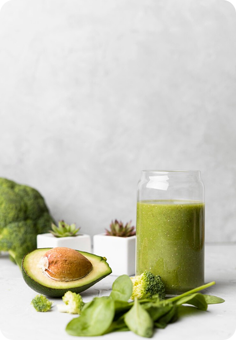

Полный контроль за рационом — проще простого
Питайся правильно!
Заменяет вредное полезным и помогает сбалансировать рацион
Экономия времени

Готовые решения без поиска и сложных расчетов – следуй рекомендациям
Оптимизация покупок
Формирует список нужных продуктов, убирает лишние траты
Худей со вкусом!
Учитывает твои цели и динамику, корректирует питание для лучшего результата
Индивидуальное меню
Умные рецепты с точным балансом калорий и нутриентов

Минимум усилий – максимум пользы!
идеально для тех, кто хочет есть вкусно, правильно и без сложных подсчётов